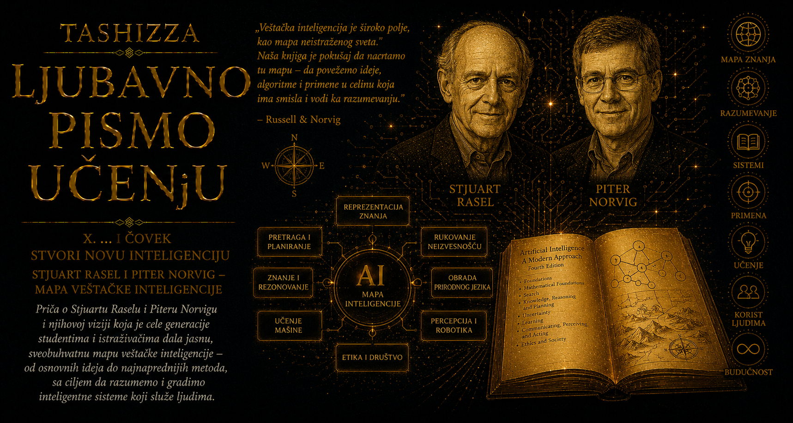

Ljubavno pismo učenju

Početkom devedesetih godina veštačka inteligencija već je imala bogatu, uzbudljivu i nemirnu istoriju. Istraživači su razvijali programe koji dokazuju teoreme, pretražuju prostore mogućih poteza, planiraju nizove radnji, prepoznaju obrasce, uče iz primera i obrađuju ljudski jezik. Postojali su ekspertni sistemi, probabilistički modeli, robotske laboratorije i čitave škole mišljenja, ali je student koji je želeo da upozna oblast često ulazio u svet podeljen na odvojene tradicije i stručne jezike. Svaki udžbenik birao je sopstveno središte discipline, pa je veštačka inteligencija ličila na biblioteku punu dragocenih knjiga kojoj nedostaje katalog sposoban da pokaže kako su njihova znanja povezana.
Način na koji se naučna oblast predaje utiče na način na koji će je sledeća generacija razvijati. Kada su metode predstavljene kao niz nepovezanih postupaka, student može naučiti da ih primenjuje, ali teško prepoznaje zbog čega određeni pristup odgovara jednom problemu, a drugom donosi pogrešne pretpostavke. Kada se jedna istraživačka tradicija proglasi središtem čitave discipline, ostale deluju kao dopune ili istorijske stranputice. Profesorima je zato bilo potrebno delo koje neće samo prikupiti rezultate već će ponuditi uređenu putanju kroz oblast, dovoljno pouzdanu za ozbiljan univerzitetski kurs i dovoljno otvorenu da primi promene koje će tek nastati.
Stjuart Rasel i Piter Norvig odgovorili su na taj izazov knjigom Artificial Intelligence: A Modern Approach, prvi put objavljenom 1995. godine. Iza naizgled jednostavne oznake „udžbenik” nalazio se izuzetno složen poduhvat: trebalo je povezati istoriju discipline, matematičke osnove, algoritme, programske primere, istraživačke probleme i pitanja koja još nisu imala zadovoljavajuća rešenja. Autori su morali da odluče kojim redom student treba da upoznaje pretragu, logiku, neizvesnost, planiranje, učenje, jezik, percepciju i robotiku, kako bi se iz poglavlja u poglavlje gradilo razumevanje celine umesto gomilanja termina.
Veliku organizacionu snagu knjizi dao je pristup zasnovan na inteligentnim agentima. Umesto da svaka tehnika bude predstavljena kao zaseban svet, mogla je da se posmatra prema ulozi koju ima u sistemu koji opaža okruženje i deluje u njemu. Pretraga pomaže pri izboru mogućeg puta, predstavljanje znanja čuva ono što je važno o svetu, verovatnoća omogućava postupanje pod neizvesnošću, planiranje povezuje odluke kroz vreme, a učenje poboljšava ponašanje na osnovu iskustva. Takva struktura omogućila je studentu da se kroz raznolike metode kreće uz isto osnovno pitanje: kako sistem može da izabere postupak koji odgovara okolnostima, cilju i znanju kojim raspolaže?
Vrednost knjige proistekla je i iz ravnoteže između širine i dubine. Autori nisu pokušavali da svaku temu iscrpe do granica specijalističke monografije, jer bi takvo delo ubrzo postalo nepregledno i izgubilo nastavnu svrhu. Umesto toga, svako područje dobilo je dovoljno teorijskog temelja da čitalac razume njegove pretpostavke, dovoljno algoritamske preciznosti da može pratiti način rada i dovoljno bibliografskih putokaza da nastavi prema izvornim radovima. Udžbenik je tako postao ulaz u istraživačku literaturu, a ne zamena za nju, pružajući studentu i mapu discipline i sredstva da samostalno istraži njene udaljenije predele.
Posebnu pažnju zaslužuje pseudokod kojim su brojni algoritmi predstavljeni nezavisno od pojedinačnog programskog jezika. Čitalac je mogao da prati strukturu postupka, razume njegove ulaze, odluke i uslove završetka, a zatim ga primeni u okruženju koje poznaje. Oko knjige su nastajale programske implementacije, zbirke zadataka, slike, nastavne prezentacije, ispravke i materijali koje su profesori mogli da prilagode sopstvenim kursevima. Delo je time preraslo svoje korice i postalo obrazovni ekosistem u kojem se znanje čitalo, proveravalo, programiralo, predavalo i zajednički dopunjavalo.
Svako novo izdanje moralo je da rešava problem koji prati udžbenike iz oblasti brzog tehnološkog razvoja: kako sačuvati trajna načela, a istovremeno priznati da se istraživačko središte promenilo. Tokom godina rasli su značaj probabilističkog zaključivanja, statističkog učenja, neuronskih mreža, računarskog vida, obrade jezika i višestrukih agenata, dok su pojedine nekada dominantne metode dobile drugačije mesto u istoriji discipline. Revizija takvog dela zahtevala je više od dodavanja novih poglavlja. Čitava ravnoteža knjige morala je da se preispita kako bi savremeni rezultati bili uključeni bez prekidanja logike kojom student postepeno gradi razumevanje.
Četvrto izdanje, oblikovano u vremenu dubokog učenja i naglog širenja primene veštačke inteligencije, pokazalo je koliko je početna struktura bila prilagodljiva. Novi sistemi postizali su rezultate koji su u vreme prvog izdanja pripadali istraživačkim ambicijama ili udaljenim očekivanjima, ali su pitanja o agentima, ciljevima, opažanju, učenju i odlučivanju ostala relevantna. Istovremeno su etika, bezbednost, pravednost, privatnost i društvene posledice dobile veći prostor, jer se disciplina više nije mogla predavati kao oblast čiji se rezultati završavaju u laboratoriji. Algoritmi su ušli u medicinu, obrazovanje, zapošljavanje, finansije, javnu upravu i svakodnevnu komunikaciju.
Generacije studenata vraćaju se ovoj knjizi zato što im ona ne nudi samo pregled onoga što je u određenom trenutku bilo savremeno. Njena trajnija vrednost nalazi se u redosledu pitanja koji osposobljava čitaoca da razmišlja. Kakav je problem pred sistemom, koje informacije su dostupne, šta ostaje skriveno, koje se radnje mogu preduzeti, kako se meri uspeh i kakve posledice proizvodi greška? Čitalac tako ne dobija samo tehničko znanje o postojećim metodama već i način da procenjuje metode koje će se pojaviti nakon što je određeno izdanje već objavljeno.
Knjiga je postala zajedničko mesto susreta ljudi koji su u oblast ulazili sa različitim predznanjem. Matematičar je u njoj mogao da prepozna formalne modele, programer algoritme i strukture podataka, psiholog pitanja o mišljenju i učenju, lingvista probleme jezika, a filozof raspravu o racionalnosti, znanju i delovanju. Takva širina nije uklonila granice između disciplina, ali je pokazala zašto se proučavanje inteligencije teško može zatvoriti unutar jedne od njih. Veštačka inteligencija zahteva saradnju različitih načina mišljenja, a dobar udžbenik učeniku omogućava da razume i njihove veze i napetosti.
Rasel i Norvig pokazali su da sistematizovanje znanja može biti stvaralački čin jednak izgradnji pojedinačne teorije ili algoritma. Potrebno je prepoznati šta je u mnoštvu rezultata temeljno, šta predstavlja istorijski korak, šta pripada savremenom istraživačkom frontu i kojim redom sve to može postati razumljivo čoveku koji tek ulazi u oblast. Uređivanje znanja zahteva naučnu preciznost, nastavničku empatiju i spremnost da se sopstvena mapa menja kada nova otkrića pokažu da su se granice teritorije pomerile.
Uticaj dela Artificial Intelligence: A Modern Approach zato se ne može izmeriti samo brojem izdanja, prevoda, kurseva ili primeraka. Njegovo nasleđe živi u zajedničkom jeziku koji su studenti poneli u laboratorije, kompanije i učionice, u načinu na koji su profesori organizovali nastavu i u sposobnosti novih istraživača da pojedinačan problem smeste u širu celinu. Mnogi čitaoci kasnije su gradili sisteme koji su menjali digitalni svet, ali su prve pouzdane koordinate discipline dobili upravo na stranicama ove knjige.
U vremenu kada se znanje ubrzano umnožava, ovakva dela postaju još potrebnija. Obilje informacija samo po sebi ne stvara razumevanje, jer činjenice bez odnosa lako ostaju nepovezane, a tehnike bez konteksta brzo se pretvaraju u prolazne recepte. Raselova i Norvigova knjiga podseća da ozbiljno obrazovanje počinje onda kada čovek dobije mapu dovoljno dobru da se po njoj kreće, ali i dovoljno otvorenu da je ume ispraviti. Generacije joj se vraćaju jer u njoj nalaze uređeno znanje i poziv na samostalno mišljenje: nauči postojeće puteve, razumi zbog čega su nastali, a zatim budi spreman da nacrtaš one koje prethodna izdanja još nisu mogla da vide.